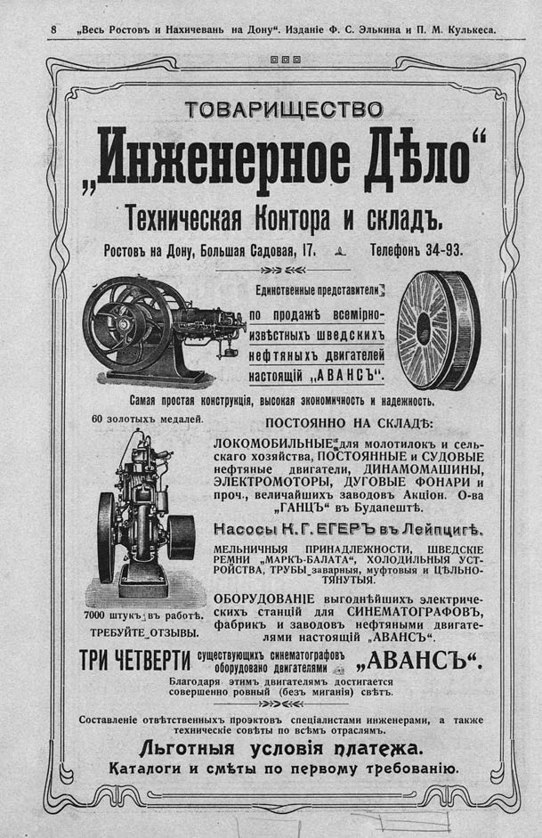

Лист источника 14
Скан

Распознанный текст
8 „Весь Ростовъ и Нахичевань на Дону“. Изданіе Ф. С. Элькина и П. М. Кулькеса.
ТОВАРИЩЕСТВО
„Инженерное Дѣло“
Техническая Контора и складъ.
Ростовъ на Дону, Большая Садовая, 17. Телефонъ 34-93.
Единственные представители
по продажѣ всемiрно-
извѣстныхъ ШВЕДСКИХЪ
нефтяныхъ двигателей
настоящiй „АВАНСЪ“.
Самая простая конструкцiя, высокая экономичность и надежность.
60 золотыхъ медалей.
7000 штукъ въ работѣ.
ТРЕБУЙТЕ ОТЗЫВЫ.
ПОСТОЯННО НА СКЛАДѢ:
ЛОКОМОБИЛЬНЫЕ для молотилокъ и сель-
скаго хозяйства, ПОСТОЯННЫЕ И СУДОВЫЕ
нефтяные ДВИГАТЕЛИ, ДИНАМОМАШИНЫ,
ЭЛЕКТРОМОТОРЫ, ДУГОВЫЕ ФОНАРИ и
проч., величайшихъ заводовъ Акцiон. О-ва
„ГАНЦЪ“ въ Будапештѣ.
Насосы К. Г. ЕГЕРЪ въ Лейпцигѣ.
МЕЛЬНИЧНЫЯ ПРИНАДЛЕЖНОСТИ, ШВЕДСКIЕ
РЕМНИ „МАРКЪ-БАЛАТА“, ХОЛОДИЛЬНЫЯ УСТ-
РОЙСТВА, ТРУБЫ заварныя, муфтовыя И ЦѢЛЬНО-
ТЯНУТЫЯ.
ОБОРУДОВАНIЕ выгоднѣйшихъ электриче-
скихъ станцiй для СИНЕМАТОГРАФОВЪ,
фабрикъ и заводовъ нефтяными двигате-
лями настоящiй „АВАНСЪ“.
ТРИ ЧЕТВЕРТИ существующихъ синематографовъ
оборудовано двигателями „АВАНСЪ“.
Благодаря этимъ двигателямъ достигается
совершенно ровный (безъ миганiя) свѣтъ.
Составленіе отвѣтственныхъ проэктовъ спецiалистами инженерами, а также
техническiе совѣты по всѣмъ отраслямъ.
Льготныя условiя платежа.
Каталоги и смѣты по первому требованію.